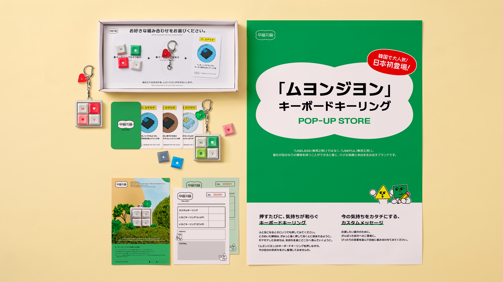
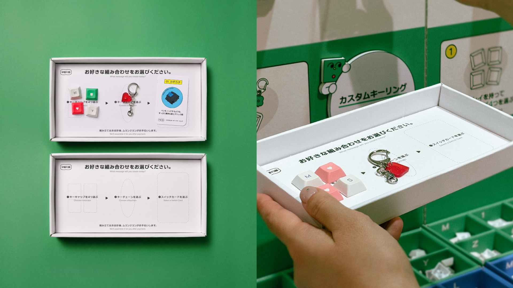
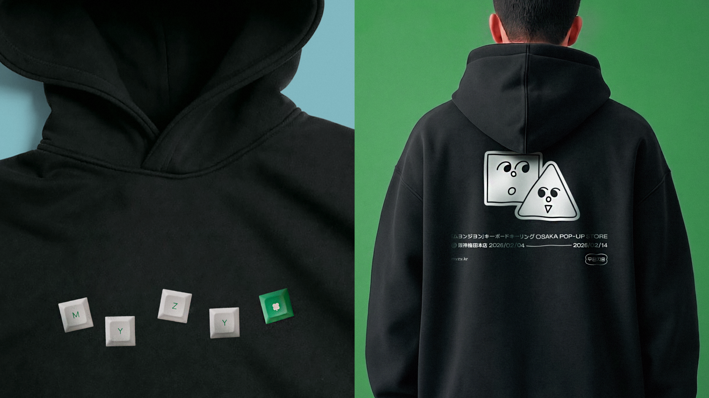
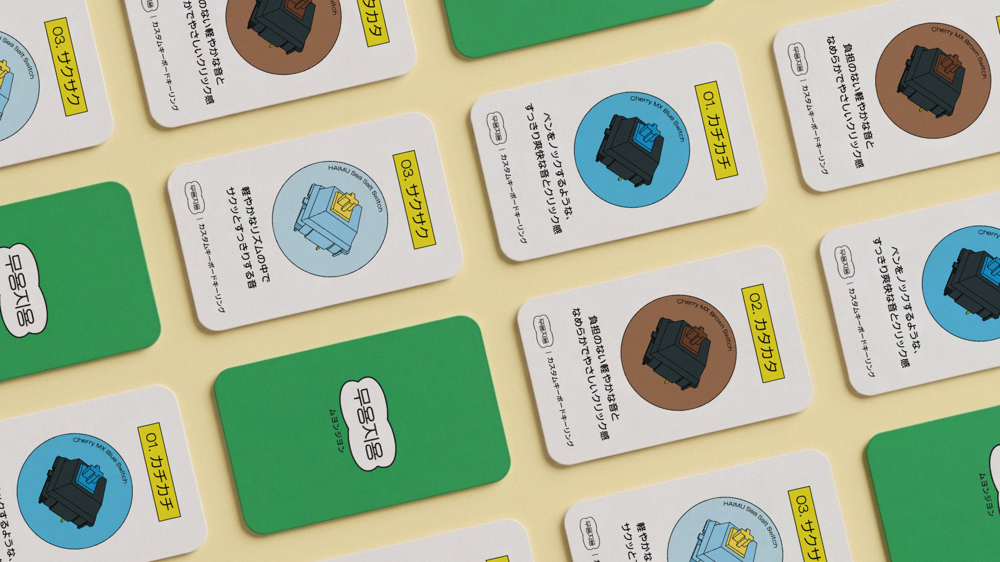

〈무용지용〉 오사카 팝업 스토어 오프라인 어플리케이션 디자인
〈MYZY〉 POP-UP @OSAKA brand application design





국내 키보드 키링 브랜드 '무용지용'의 일본 팝업 스토어를 위한 비주얼 에셋 디자인을 진행했습니다. 일본 시장에 성공적으로 안착하기 위해 일관된 브랜드 경험과 쉬운 커스터마이징 경험을 동시에 고려한 스토어 POP 디자인을 제안했습니다. 해외 진출 시 발생할 수 있는 리스크인 브랜드 일관성 훼손 및 일본 내 인지도 분산이 일어나지 않도록 매장 POP 등 사이니지에 브랜드의 핵심 비주얼 에셋인 그린 컬러와 로고형태의 심볼을 적극 활용했습니다.
I designed the visual assets for the Japanese pop-up store of 'MYZY', a domestic keyboard keycap brand. To ensure a successful entry into the Japanese market, I proposed store POP designs that balance a consistent brand experience with an intuitive customization process. To mitigate risks such as brand dilution or fragmented recognition during international expansion, I actively utilized the brand's core visual assets—specifically its signature green color and logo-shaped symbols—across store signage and POP materials.